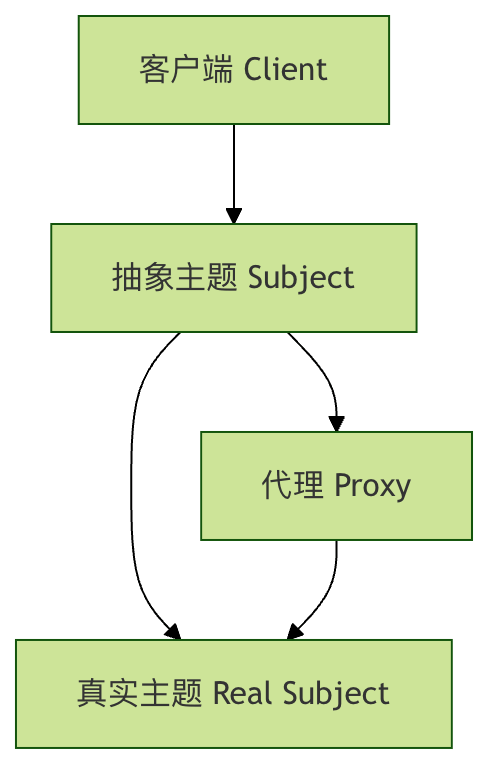

Python プロキシパターン
プロキシパターンは構造型デザインパターンの一つで、別のオブジェクトの代役やプレースホルダーを提供し、そのオブジェクトへのアクセスを制御します。簡単に言えば、プロキシは仲介者であり、クライアントとターゲットオブジェクトの間で仲介役を果たします。
身近なプロキシのたとえ
現実の生活の場面を想像してみてください:
- 不動産仲介業者: 家主と直接連絡する必要はなく、仲介業者を通じて物件情報を得たり、内見を手配したりできます。
- 芸能人のマネージャー: メーカーが芸能人に広告出演を依頼したい場合、マネージャーを通じて契約の詳細を交渉する必要があります。
- ネットワークプロキシサーバー: あなたのネットワークリクエストはまずプロキシサーバーを経由し、プロキシサーバーがターゲットサイトに転送します。
これらの例では、仲介業者やマネージャーがプロキシであり、実際のオブジェクトへのアクセスを制御しています。
プロキシパターンの核心的な構成
プロキシパターンには通常、次の三つの重要な役割があります:
1. 抽象サブジェクト (Subject)
リアルサブジェクトとプロキシサブジェクトの共通インターフェースを定義します。これにより、リアルサブジェクトを使用するあらゆる場所でプロキシサブジェクトを使用できます。
2. リアルサブジェクト (Real Subject)
プロキシが表す実際のオブジェクトを定義し、最終的に参照されるオブジェクトです。
3. プロキシ (Proxy)
エンティティにアクセスできるように参照を保持し、リアルサブジェクトと同じインターフェースを提供して、リアルサブジェクトへのアクセスを制御します。

プロキシパターンの種類
プロキシパターンにはさまざまなバリエーションがあり、それぞれ適用場面が異なります:
1. 仮想プロキシ (Virtual Proxy)
コストの高いオブジェクトの作成を遅延し、実際に必要になるまで作成しません。
2. 保護プロキシ (Protection Proxy)
元のオブジェクトへのアクセスを制御します。オブジェクトごとに異なるアクセス権限が必要な場合に使用します。
3. リモートプロキシ (Remote Proxy)
異なるアドレス空間にあるオブジェクトに対してローカルな代表を提供します。
4. スマートリファレンスプロキシ (Smart Reference Proxy)
オブジェクトにアクセスする際に、参照カウントや遅延読み込みなどの追加操作を実行します。
Python でのプロキシパターンの実装
具体的なコード例を通じて、プロキシパターンの実装を理解しましょう。
基本インターフェースの定義
まず、抽象サブジェクトインターフェースを定義します:
例
from typing import Any
class Subject(ABC):
"""
抽象サブジェクトインターフェース。リアルサブジェクトとプロキシの共通操作を定義します。
"""
@abstractmethod
def request(self) -> Any:
"""リクエストを実行する主要メソッド"""
pass
リアルサブジェクトの実装
例
"""
リアルサブジェクトクラス。中核となるビジネスロジックを含みます。
通常、作成と初期化のコストが高い。
"""
def __init__(self, name: str):
self.name = name
print(f"RealSubject インスタンスを作成: {self.name} (これは高コストな操作です)")
def request(self) -> str:
"""実際のリクエストを実行"""
print(f"RealSubject: リクエストを処理 - {self.name}")
return f"{self.name} からの応答"
プロキシクラスの実装
例
"""
プロキシクラス。リアルサブジェクトへのアクセスを制御します。
遅延読み込みやアクセス制御などの追加機能を追加できます。
"""
def __init__(self, subject_name: str):
self.subject_name = subject_name
self._real_subject = None # 遅延初期化
def _lazy_init(self) -> None:
"""リアルサブジェクトオブジェクトを遅延読み込み"""
if self._real_subject is None:
self._real_subject = RealSubject(self.subject_name)
def request(self) -> str:
"""プロキシのリクエストメソッド。追加のロジックを追加できます。"""
print("Proxy: 実オブジェクトの呼び出し前に前処理を実行")
# 実オブジェクトを遅延読み込み
self._lazy_init()
# 実オブジェクトのメソッドを呼び出し
result = self._real_subject.request()
print("Proxy: 実オブジェクトの呼び出し後に後処理を実行")
return f"プロキシによって拡張された結果: {result}"
クライアントコード
例
"""
クライアントコード。抽象インターフェースを通じてサブジェクトとやり取りします。
使用しているのがリアルサブジェクトかプロキシかを知らず、気にもしません。
"""
print("クライアント: 操作を開始")
result = subject.request()
print(f"クライアント: 結果を受け取り - {result}")
print()
# 使用例
if __name__ == "__main__":
print("リアルサブジェクトを直接使用:")
real_subject = RealSubject("実オブジェクトA")
client_code(real_subject)
print("プロキシを使用:")
proxy = Proxy("プロキシオブジェクトB")
client_code(proxy)
# 同じプロキシを再度使用して、遅延読み込みの効果を確認
print("同じプロキシを再度使用:")
client_code(proxy)
上記のコードを実行すると、次の出力が表示されます:
直接使用真实主题: 创建 RealSubject 实例: 真实对象A (这是一个昂贵的操作) 客户端: 开始执行操作 RealSubject: 处理请求 - 真实对象A 客户端: 收到结果 - 来自 真实对象A 的响应 使用代理: 客户端: 开始执行操作 Proxy: 在调用真实对象前进行预处理 创建 RealSubject 实例: 代理对象B (这是一个昂贵的操作) RealSubject: 处理请求 - 代理对象B Proxy: 在调用真实对象后进行后处理 客户端: 收到结果 - 代理增强的结果: 来自 代理对象B 的响应 再次使用同一个代理: 客户端: 开始执行操作 Proxy: 在调用真实对象前进行预处理 RealSubject: 处理请求 - 代理对象B Proxy: 在调用真实对象后进行后处理 客户端: 收到结果 - 代理增强的结果: 来自 代理对象B 的响应
実際の応用例: 画像読み込みプロキシ
より実践に近い例として、画像読み込みの仮想プロキシを見てみましょう。
画像読み込みシステム
例
import time
class Image:
"""実際の画像クラス。大きな画像の読み込みという高コストな操作をシミュレートします。"""
def __init__(self, filename: str):
self.filename = filename
self._load_image()
def _load_image(self) -> None:
"""大きな画像の読み込みという高コストな操作をシミュレート"""
print(f"画像を読み込み中: {self.filename} (数秒かかる可能性があります...)")
time.sleep(2) # 読み込み時間をシミュレート
print(f"画像 {self.filename} の読み込みが完了しました!")
def display(self) -> None:
"""画像を表示"""
print(f"画像を表示: {self.filename}")
class ImageProxy:
"""画像プロキシ。遅延読み込みを実装します。"""
def __init__(self, filename: str):
self.filename = filename
self._image = None
def display(self) -> None:
"""画像を表示。必要であれば最初に読み込みます。"""
if self._image is None:
print("プロキシ: 画像が未読み込みであることを検出し、遅延読み込みを開始...")
self._image = Image(self.filename)
else:
print("プロキシ: 画像は読み込み済みなので、そのまま表示します")
self._image.display()
# 使用例
def demo_image_proxy():
print("画像プロキシを作成 (画像はすぐには読み込まれません)")
proxy = ImageProxy("large_photo.jpg")
print("\n最初の display() 呼び出し - 遅延読み込みをトリガー:)
proxy.display()
print("\n2回目の display() 呼び出し - 読み込み済みの画像をそのまま使用:)
proxy.display()
# 例を実行
demo_image_proxy()
保護プロキシの例: アクセス制御
保護プロキシは、機密リソースへのアクセスを制御するために使用されます。
例
"""機密データクラス"""
def __init__(self, data: str):
self.data = data
def read_data(self) -> str:
"""機密データを読み取る"""
return f"機密データ: {self.data}"
class ProtectionProxy:
"""保護プロキシ。アクセス制御を実装します。"""
def __init__(self, sensitive_data: SensitiveData, user_role: str):
self._sensitive_data = sensitive_data
self.user_role = user_role
def read_data(self) -> str:
"""データを読み取るが、権限チェックを行う"""
if self.user_role != "admin":
return "エラー: 権限が不足しています。機密データにアクセスできるのは管理者のみです"
return self._sensitive_data.read_data()
# 使用例
def demo_protection_proxy():
sensitive_data = SensitiveData("機密情報: プロジェクト予算は100万元")
# 一般ユーザーがアクセスを試みる
user_proxy = ProtectionProxy(sensitive_data, "user")
print("一般ユーザーがアクセスを試みる:")
print(user_proxy.read_data())
# 管理者がアクセス
admin_proxy = ProtectionProxy(sensitive_data, "admin")
print("\n"管理者がアクセス:")
print(admin_proxy.read_data())
demo_protection_proxy()
プロキシパターンの長所と短所
長所
- オブジェクトアクセスの制御: プロキシは、クライアントが実オブジェクトにどのように、いつアクセスするかを制御できます。
- 遅延読み込みによる最適化: 仮想プロキシは高コストなオブジェクトの作成を遅延させ、パフォーマンスを向上させます。
- セキュリティの強化：保護プロキシはアクセス制御ロジックを追加できる
- 開放閉鎖の原則：クライアントコードを変更せずに新しいプロキシを導入できる
- 責務の分離：プロキシは中核となるビジネスロジックとは無関係な補助機能を処理できる
短所
- 複雑性の増加：新しい抽象レイヤーを導入し、コード構造をより複雑にする
- 応答遅延：プロキシはリクエストの処理時間を増加させる可能性がある
- 過剰設計の可能性：単純なシナリオでは、プロキシの使用は冗長に見える可能性がある
プロキシパターンの適用場面
プロキシパターンは以下のシナリオで特に有用です：
1. 遅延読み込み (Lazy Loading)
オブジェクトの作成コストが高いが、すぐに使用されない可能性がある場合。
2. アクセス制御 (Access Control)
特定のオブジェクトへのアクセス権限を制限する必要がある場合。
3. ローカル代表 (Remote Representation)
リモートオブジェクトにローカルインターフェースを提供します。RPC呼び出しなど。
4. ログ記録 (Logging)
メソッド呼び出しの前後にログ記録を追加します。
5. キャッシュ (Caching)
高コストな操作の結果にキャッシュを提供します。
実践演習
プロキシパターンの理解を深めるために、次の演習を試してみてください：
演習 1: キャッシュプロキシ
フィボナッチ数列を計算する関数にキャッシュ機能を追加するキャッシュプロキシを作成します：
例
"""フィボナッチ数列を計算する"""
def fibonacci(self, n: int) -> int:
if n <= 1:
return n
return self.fibonacci(n - 1) + self.fibonacci(n - 2)
# あなたのタスク：FibonacciCacheProxyクラスを実装する
# 要件：フィボナッチ計算にキャッシュを追加し、重複計算を避ける
class FibonacciCacheProxy:
def __init__(self):
self._calculator = FibonacciCalculator()
self._cache = {} # ここにキャッシュロジックを実装する
def fibonacci(self, n: int) -> int:
# キャッシュロジックを実装する
pass
# テストコード
def test_cache_proxy():
proxy = FibonacciCacheProxy()
print("fib(10)の最初の計算:")
result1 = proxy.fibonacci(10)
print(f"結果: {result1}")
print("fib(10)の2回目の計算 (キャッシュから取得されるはず):")
result2 = proxy.fibonacci(10)
print(f"結果: {result2}")
print(f"2つの結果は同じ: {result1 == result2}")
演習 2: ログプロキシ
メソッドの呼び出し情報を記録するログプロキシを作成します：
例
"""データベースサービス"""
def query(self, sql: str) -> str:
return f"クエリを実行: {sql}"
def update(self, sql: str) -> str:
return f"更新を実行: {sql}"
# あなたのタスク：LoggingProxyクラスを実装する
# 要件：各メソッドの呼び出し時間、引数、結果を記録する
class LoggingProxy:
def __init__(self):
self._service = DatabaseService()
def query(self, sql: str) -> str:
# ログ記録ロジックを追加する
pass
def update(self, sql: str) -> str:
# ログ記録ロジックを追加する
pass
まとめ
プロキシパターンは、中間層を導入して実際のオブジェクトへのアクセスを制御する強力なデザインパターンです。Pythonでプロキシパターンを実装するのは比較的簡単で、主にPythonの動的な特性のおかげです。
重要なポイント
- プロキシは仲介者：クライアントと実際のオブジェクトの間で仲介役を務める
- インターフェースの一貫性：プロキシと実際のオブジェクトは同じインターフェースを実装する
- アクセス制御：プロキシは遅延ロードや権限チェックなどの追加の制御ロジックを追加できる
- 柔軟な適用：ニーズに応じて異なるタイプのプロキシを選択する